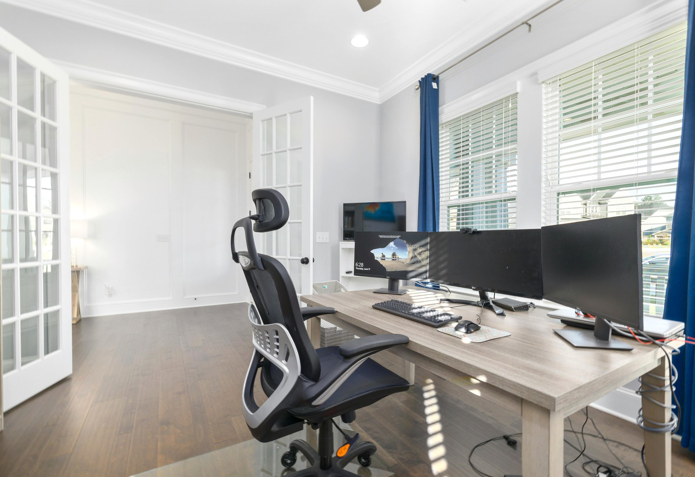

Project intake

Project intake
WordPress scope

App request

SEO direction

Cloud hosting
Step 01
網站、WordPress、App、SEO、雲端主機可單選，也能整合在同一案。
Step 02
我們會依內容量、功能與成長需求，整理成更好決策的報價方向。
Step 03
把設計、開發、主機部署與後續維運排成清楚流程。
Start your project
可先說明你要做網站、WordPress、App、SEO 或雲端主機；若還不確定，我們也能幫你建議合適組合。
Usually
Output